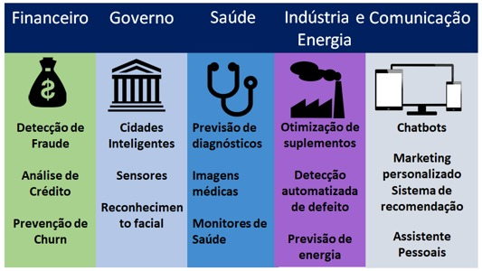

Inteligência Artificial
A Inteligência Artificial é a capacidade que soluções tecnológicas têm de simular a inteligência humana, realizando determinadas atividades de maneira autônoma e aprendendo por si mesmas, graças ao processamento de um grande volume de dados que recebem de seus usuários.
IA é uma das áreas mais fascinantes e promissoras da tecnologia atual. Ela permite que máquinas e dispositivos eletrônicos realizem tarefas que antes eram exclusivas dos seres humanos. E não apenas tarefas mecânicas, mas também tarefas que exigiam a atuação de profissionais especializados.
A IA é dividida em várias subáreas, incluindo o aprendizado de máquina, processamento de linguagem natural, visão computacional, robótica e computação cognitiva
Aprendizado de Máquina (Machine Learning): O aprendizado de máquina é uma técnica de inteligência artificial que permite que as máquinas aprendam com dados, sem serem explicitamente programadas.
Robótica: A robótica é a combinação da engenharia mecânica, eletrônica e computação para criar robôs que possam ser programados para executar tarefas complexas. Os robôs estão se tornando cada vez mais sofisticados e autônomos, capazes de realizar tarefas complexas e interagir com os humanos. A robótica tem aplicações em áreas como manufatura, medicina, transporte, agricultura e até mesmo exploração espacial.
Processamento de linguagem natural (PNL): O processamento de linguagem natural é uma técnica de inteligência artificial que permite que as máquinas entendam e processem a linguagem humana. Com o PNL, as máquinas são capazes de entender o significado e o contexto das palavras, permitindo que elas se comuniquem de forma mais natural e inteligente com os humanos.
Computação cognitiva: A computação cognitiva é uma área da inteligência artificial que se concentra em criar sistemas que podem raciocinar, aprender e tomar decisões de forma mais autônoma. Com a computação cognitiva, as máquinas são capazes de imitar a forma como o cérebro humano funciona, permitindo que elas sejam mais eficazes em tarefas complexas.
